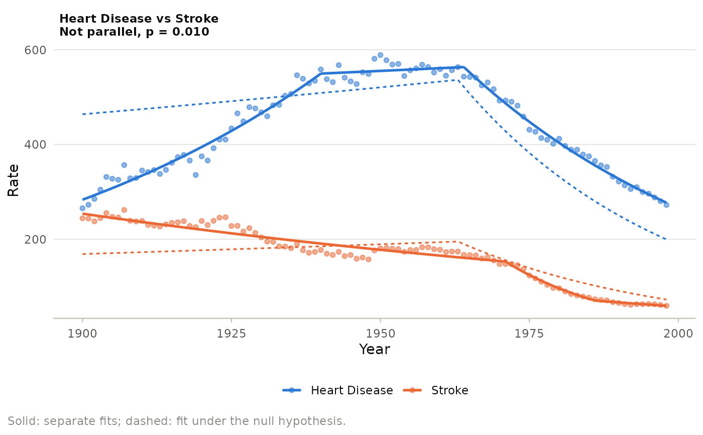

Observed values of the compared cohorts with their separately fitted
models (solid) and the model fitted under the null hypothesis of
parallelism or coincidence (dashed), one panel per pair.
Usage
# S3 method for class 'jp_comparison'
autoplot(object, log_y = FALSE, ...)
Arguments
- object
A jp_comparison object.
- log_y
Use a logarithmic y axis.
- ...
Ignored.
Examples
d <- subset(us_mortality, cause %in% c("Stroke", "Heart Disease"))
fit <- joinpoint(d, year, rate, by = "cause", kmax = 2,
ci_method = "parametric")
ggplot2::autoplot(jp_compare(fit, n_perm = 99))
